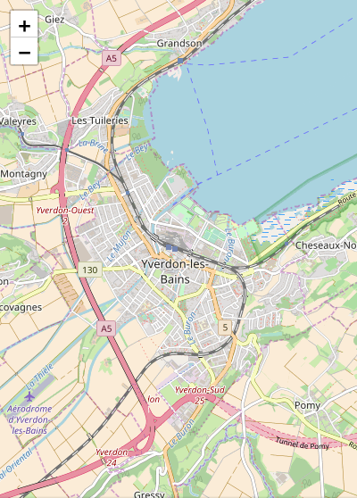

# Leaflet with Angular How to integrate Leaflet in your angular application **You will need** - A running [Ionic][ionic] application **Recommended reading** - [Ionic](../ionic/) - [Angular](../angular/) - [Geolocation with Ionic](../ionic-geolocation) # Leaflet There are many JavaScript map libraries, each with their own advantages. For this tutorial, we'll use [Leaflet][leaflet] as it's one of the most popular open source libraries. We'll also use [ngx-leaflet][ngx-leaflet], which is an Angular wrapper around Leaflet. You can install both with npm: ```bash $> npm install leaflet @asymmetrik/ngx-leaflet ``` As we are in a TypeScript project and Leaflet is not written in TypeScript, you'll also need to install its [type definitions][definitely-typed]: ```bash $> npm install --save-dev @types/leaflet ``` --- ## Importing Leaflet styles .breadcrumbs[<a href="#2">Leaflet</a>] For the map to display correctly, you need to add Leaflet CSS to your project. To do so, open your `angular.json` file that should sit at the root of your project's files, and add the path to the leaflet css file to the `projects.app.architect.build.options.styles` array, like so: ```json { // ... "styles": [ // Previous styles * "node_modules/leaflet/dist/leaflet.css" ], // ... } ``` --- ## Importing Leaflet assets .breadcrumbs[<a href="#2">Leaflet</a>] Along with the styles, you'll also need to import the Leaflet's assets (e.g. the marker icon). This is also done in `angular.json`. Add the following object to the `projects.app.architect.build.options.assets` array: ```json { // ... "assets": [ // Previous assets definition { * "glob": "**/*", * "input": "node_modules/leaflet/dist/images", * "output": "leaflet/" } ], // ... } ``` --- ## Registering the Leaflet module with Angular .breadcrumbs[<a href="#2">Leaflet</a>] To use the [ngx-leaflet][ngx-leaflet] library, you must add its `LeafletModule` to your application's module in `src/app/app.module.ts`: ```ts // Other imports... *import { LeafletModule } from '@asymmetrik/ngx-leaflet'; @NgModule({ // ... imports: [ /* Other imports... */, LeafletModule ] // ... }) export class AppModule {} ``` And also import it in the module that declares the page displaying your map: ```ts // Other imports... *import { LeafletModule } from '@asymmetrik/ngx-leaflet'; @NgModule({ // ... imports: [ /* Other imports... */, LeafletModule ] // ... }) export class ExamplePageModule {} ``` --- ## Displaying a map .breadcrumbs[<a href="#2">Leaflet</a>] To display map, you need to define some basic map options. Here's how you could add them to a sample `ExamplePage` component: ```ts // Other imports... *import { latLng, MapOptions, tileLayer } from 'leaflet'; @Component(/* ... */) export class ExamplePage { * mapOptions: MapOptions; constructor(/* ... */) { // ... * this.mapOptions = { * layers: [ * tileLayer( * 'http://{s}.tile.openstreetmap.org/{z}/{x}/{y}.png', * { maxZoom: 18 } * ) * ], * zoom: 13, * center: latLng(46.778186, 6.641524) * }; } } ``` --- ### Adding the map to the component's template .breadcrumbs[<a href="#2">Leaflet</a> > <a href="#6">Displaying a map</a>] To display the map in your page's template, you need to add the `leaflet` directive to a `<div>` on the page. You can pass the options to this map by binding an object to the `leafletOptions` directive: ```html <div class="map" leaflet [leafletOptions]="mapOptions"></div> ``` .grid-70[ The `leaflet` directive instructs the `ngx-leaflet` library to create a map in this DOM element, with our previously defined `mapOptions` bound through the `[leafletOptions]` directive. The map will have no height by default, so add the following to the component's stylesheet to make it visible: ```scss .map { height: 100%; } ``` You should now have a working Leaflet map! ] .grid-30[  ] --- ### Troubleshooting .breadcrumbs[<a href="#2">Leaflet</a> > <a href="#6">Displaying a map</a>] If you do **not** have a working Leaflet map, but instead have some kind of broken map like the one below, then you'll need to add a little bit of code to fix this issue. .grid-30[ <img src='images/leaflet-display-bug.png' class='w100' /> ] .grid-70[ > Note that this "issue" is [well](https://stackoverflow.com/questions/38832273/leafletjs-not-loading-all-tiles-until-moving-map) [known](https://github.com/Asymmetrik/ngx-leaflet/issues/104), but it's very hard to pinpoint what exactly causes it in your app. In your page's class, add the following method: ```ts onMapReady(map: Map) { setTimeout(() => map.invalidateSize(), 0); } ``` And in your page's template, trigger this new method with the `leafletMapReady` event: ```html <div class="leaflet-map" leaflet [leafletOptions]="options" (leafletMapReady)="onMapReady($event)" ></div> ``` ] --- ## Markers .breadcrumbs[<a href="#2">Leaflet</a>] Adding markers to the map is not very hard. First, you need to create an icon configuration for the markers. Do that by creating a file that exports this marker configuration. Let's call it, for example, `default-marker.ts` and add it this content: ```ts import { Icon, IconOptions, icon } from "leaflet"; export const defaultIcon: Icon<IconOptions> = icon({ // This define the displayed icon size, in pixel iconSize: [25, 41], // This defines the pixel that should be placed right above the location // If not provided, the image center will be used, and that could be awkward iconAnchor: [13, 41], // The path to the image to display. In this case, it's a Leaflet asset iconUrl: "leaflet/marker-icon.png", // The path to the image's shadow to display. Also a leaflet asset shadowUrl: "leaflet/marker-shadow.png", }); ``` --- ### Define .breadcrumbs[<a href="#2">Leaflet</a> > <a href="#9">Markers</a>] Then, let's create some markers and add them to the component: ```ts // Other imports... // Import the file with the default icon configuration import { `defaultIcon` } from 'path/to/default/icon/file'; import { latLng, MapOptions, `marker, Marker`, tileLayer } from 'leaflet'; // ... export class ExamplePage { // ... * mapMarkers: Marker[]; constructor(/* ... */) { // ... * this.mapMarkers = [ * marker([ 46.778186, 6.641524 ], { icon: defaultIcon }), * marker([ 46.780796, 6.647395 ], { icon: defaultIcon }), * marker([ 46.784992, 6.652267 ], { icon: defaultIcon }) * ]; } } ``` --- ### Adding the markers to the map .breadcrumbs[<a href="#2">Leaflet</a> > <a href="#9">Markers</a>] .grid-70[ Now all you need to do is bind the array of markers you just defined to the `leaflet` directive in the component's template with `[leafletLayers]`: ```html <div class="map" leaflet [leafletOptions]="mapOptions" `[leafletLayers]="mapMarkers" ` ></div> ``` ] .grid-30[ <img src='images/leaflet-map-markers.png' class='w100' /> ] --- ### Adding a tooltip to a marker .breadcrumbs[<a href="#2">Leaflet</a> > <a href="#9">Markers</a>] .grid-70[ The markers you created in the `mapMarkers` array in the component are regular Leaflet [Marker][leaflet-marker] objects. Check out the Leaflet documentation to see what you can do with them. ] .grid-30[ <img src='images/leaflet-map-marker-tooltip.png' class='w100' /> ] .container[ For example, you could add a [Tooltip][leaflet-tooltip]: ```ts this.mapMarkers = [ marker([46.778186, 6.641524])`.bindTooltip('Hello')`, marker([46.780796, 6.647395]), marker([46.784992, 6.652267]), ]; ``` ] --- ## Getting a reference to the map .breadcrumbs[<a href="#2">Leaflet</a>] You might need to get direct access to the Leaflet [Map][leaflet-map] object to register events or whatever. The `leaflet` directive will emit a `leafletMapReady` event when it's done initializing the map. You can bind to this event to retrieve the map object created by Leaflet: ```html <div class="map" leaflet [leafletOptions]="mapOptions" [leafletLayers]="mapMarkers" `(leafletMapReady)="onMapReady($event)" ` ></div> ``` Now all you need to do is retrieve the map in your component: ```ts // Other imports... import { latLng, `Map`, MapOptions, marker, Marker, tileLayer } from 'leaflet'; // ... export class ExamplePage { * map: Map; // ... * onMapReady(map: Map) { * this.map = map; * } } ``` --- ## Listening to map events .breadcrumbs[<a href="#2">Leaflet</a>] You got a hold of the Leaflet [Map][leaflet-map] instance with the previous example, so you have access to [all its events][leaflet-map-events]. For example, you could listen to its `moveend` event to check the new coordinates every time the user moves the map: ```ts // ... export class ExamplePage { // ... onMapReady(map: Map) { this.map = map; * this.map.on('moveend', () => { * const center = this.map.getCenter(); * console.log(\`Map moved to ${center.lng}, ${center.lat}`); * }); } } ``` --- ## Resources .breadcrumbs[<a href="#2">Leaflet</a>] **Documentation** - [Ionic documentation][ionic-docs] - [Leaflet][leaflet] & [ngx-leaflet][ngx-leaflet] [cordova]: https://cordova.apache.org [cordova-camera]: https://github.com/apache/cordova-plugin-camera [cordova-geolocation]: https://github.com/apache/cordova-plugin-geolocation [definitely-typed]: http://definitelytyped.org [ionic]: http://ionicframework.com [ionic-docs]: https://ionicframework.com/docs/ [ionic-native-camera]: https://ionicframework.com/docs/native/camera/ [ionic-native-geolocation]: https://ionicframework.com/docs/native/geolocation/ [html-geolocation]: https://developer.mozilla.org/en-US/docs/Web/API/Geolocation/Using_geolocation [leaflet]: http://leafletjs.com [leaflet-map]: http://leafletjs.com/reference-1.3.0.html#map-example [leaflet-map-events]: http://leafletjs.com/reference-1.3.0.html#map-event [leaflet-marker]: http://leafletjs.com/reference-1.3.0.html#marker [leaflet-tooltip]: http://leafletjs.com/reference-1.3.0.html#tooltip [ngx-leaflet]: https://github.com/Asymmetrik/ngx-leaflet#readme